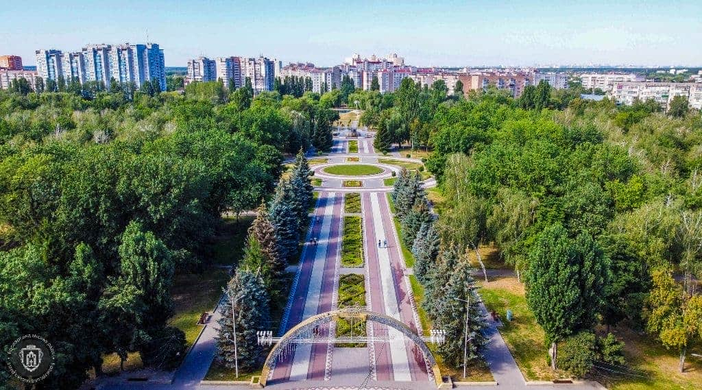

Дата і місце народження: 9 серпня 2007 року, м. Бровари, Київська область.
Освіта:
Закінчив 11 класів у Броварському ліцеї №3.
Навчаюся у КПІ ім. Ігоря Сікорського на факультеті інформатики та
обчислювальної техніки (ФІОТ), кафедра інформаційних систем та технологій,
спеціальність 126 "Інформаційні системи та технології".
Мої хобі:
Улюблені книги, фільми та ігри:
Бровари - це найбільше місто-супутник Києва, розташоване на схід від столиці. Воно відоме своїми зеленими зонами, зокрема гарним парком "Перемога", де приємно гуляти. У Броварах також сильні спортивні традиції та є багато можливостей для активного відпочинку.
